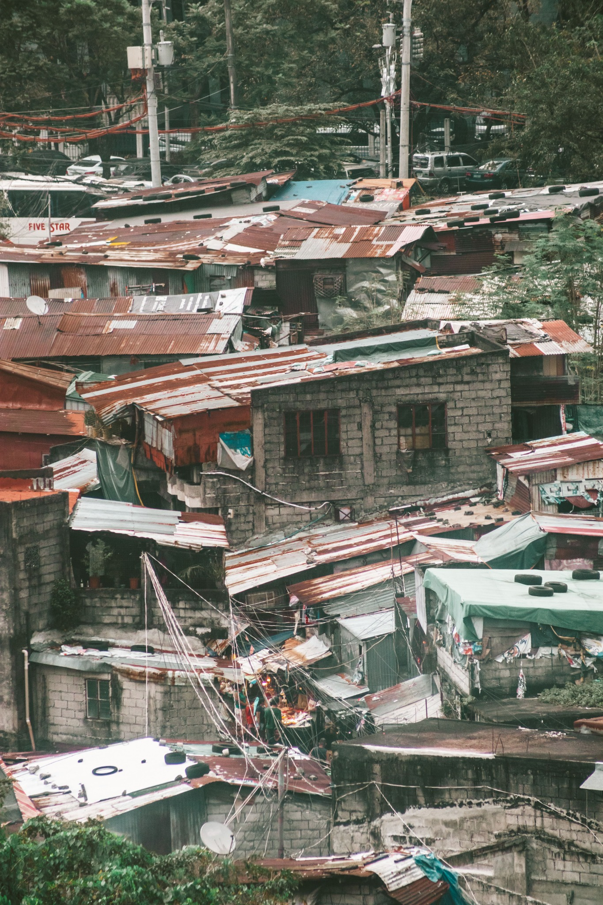
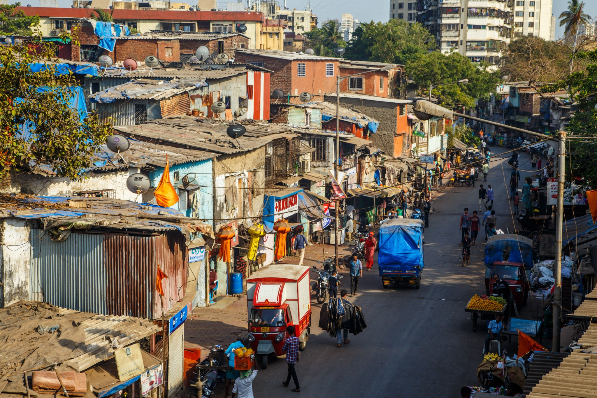

Water, sanitation & essential services
A visual collection to accompany questions about infrastructure, service access and everyday living conditions.



Original field photographs and interview-based material will be added following appropriate ethical approval, informed consent and safeguarding review. These images are included for visual context and are not represented as original field reporting.
The question
Reliable water and sanitation services are fundamental to health and dignity. A careful investigation would document conditions, examine service responsibilities, compare official commitments with evidence, and include residents and responsible authorities.
What reporting could explore
- How residents describe reliability, safety and access to sanitation.
- Which agencies are responsible for maintenance, funding and complaint handling.
- What public data exists on coverage, service interruptions and health risks.
- Whether residents can access transparent channels to report and resolve problems.
Interview notebook
Questions for a future interview
What service issue affects daily life most? How are complaints handled? Which public records or independent assessments can verify the situation?
Protect residents from stigma or retaliation; obtain permission before photographing identifiable people or private property.